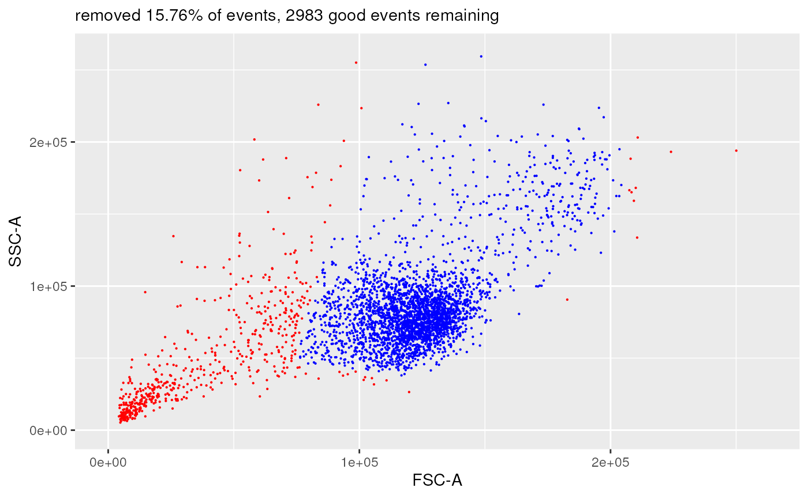
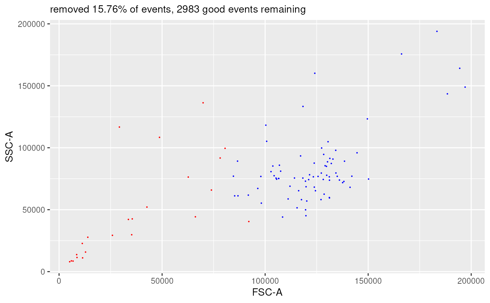

Plot the difference plot between two flow frames from a CytoPipeline run
Source:R/plots.R
plotDiffFlowFrame.RdBased on an experiment name, this function will gather the required flowFrames from the CytoPipeline disk cache and display a difference plot using the user chosen 1D or 2D view.
plotDiffFlowFrame(
experimentNameFrom,
experimentNameTo,
whichQueueFrom,
whichQueueTo,
sampleFileFrom,
sampleFileTo,
path,
flowFrameNameFrom,
flowFrameNameTo,
xChannelLabelFrom,
xChannelLabelTo,
yChannelLabelFrom,
yChannelLabelTo,
interactive = FALSE,
useAllCells,
nDisplayCells,
useFixedLinearRange,
linearRange,
transfoListName = " "
)Arguments
- experimentNameFrom
the experiment name (representing a pipeline run) from which to extract the flow frame ('from' situation)
- experimentNameTo
the experiment name (representing a pipeline run) from which to extract the flow frame ('to' situation)
- whichQueueFrom
"pre-processing" or "scale transform" ('from' situation)
- whichQueueTo
"pre-processing" or "scale transform" ('to' situation)
- sampleFileFrom
in case 'whichQueueFrom' is set to 'pre-processing, which sample file to look at for the 'from' situation. This can be a number or a character.
if whichQueueFrom == "scale transform", the sampleFileFrom is ignored
if NULL and whihQueueFrom == "pre-processing", the sampleFileFrom is defaulted to the first one belonging to the experiment
- sampleFileTo
same as sampleFileFrom, but for the 'to' situation
- path
the root path to look for the CytoPipeline experiment cache
- flowFrameNameFrom
for the 'from' situation, the name of the object to fetch (as referenced in the pipeline workflow)
- flowFrameNameTo
for the 'to' situation, the name of the object to fetch (as referenced in the pipeline workflow)
- xChannelLabelFrom
the label of the channel to be displayed on the x axis: the conventional syntax is :
channelName+ " - " +channelMarker- xChannelLabelTo
should be equal to xChannelLabelFrom (otherwise no plot is returned but NULL)
- yChannelLabelFrom
the label of the channel to be displayed on the y axis: the conventional syntax is :
channelName+ " - " +channelMarker- yChannelLabelTo
should be equal to yChannelLabelFrom (otherwise no plot is returned but NULL)
- interactive
if TRUE, uses ggplot_shiny
- useAllCells
if TRUE, no subsampling will be done
- nDisplayCells
if useAllCells == FALSE, the number of subsampled cells
- useFixedLinearRange
if TRUE, all channels using a linear scale will use a fixed range set by linearRange
- linearRange
set for all channels using a linear scale, if useFixedLinearRange == TRUE
- transfoListName
if not set to " ", the transformation list (as an object name ending with "_obj", as referenced in the pipeline workflow) to be used for for display.
Value
a ggplot (or plotly if interactive = TRUE) object
Examples
# run CytoPipeline object first
outputDir <- base::tempdir()
rawDataDir <-
system.file("extdata", package = "CytoPipeline")
experimentName <- "OMIP021_PeacoQC"
sampleFiles <-
file.path(
rawDataDir,
list.files(rawDataDir, pattern = "Donor"))
jsonDir <- system.file("extdata", package = "CytoPipeline")
jsonPath <- file.path(jsonDir, "pipelineParams.json")
pipL2 <- CytoPipeline(
jsonPath,
experimentName = experimentName,
sampleFiles = sampleFiles)
suppressWarnings(execute(
pipL2,
rmCache = TRUE,
path = outputDir))
#> #####################################################
#> ### running SCALE TRANSFORMATION processing steps ###
#> #####################################################
#> Proceeding with step 1 [flowframe_read] ...
#> Proceeding with step 2 [remove_margins] ...
#> Removing margins from file : Donor1.fcs
#> Removing margins from file : Donor2.fcs
#> Proceeding with step 3 [compensate] ...
#> Compensating file : Donor1.fcs
#> Compensating file : Donor2.fcs
#> Proceeding with step 4 [flowframe_aggregate] ...
#> Proceeding with step 5 [scale_transform_estimate] ...
#> #####################################################
#> ### NOW PRE-PROCESSING FILE /__w/_temp/Library/CytoPipeline/extdata/Donor1.fcs...
#> #####################################################
#> Proceeding with step 1 [flowframe_read] ...
#> Proceeding with step 2 [remove_margins] ...
#> Removing margins from file : Donor1.fcs
#> Proceeding with step 3 [compensate] ...
#> Compensating file : Donor1.fcs
#> Proceeding with step 4 [remove_doublets] ...
#> Proceeding with step 5 [remove_debris] ...
#> Proceeding with step 6 [remove_dead_cells] ...
#> Proceeding with step 7 [perform_QC] ...
#> Applying PeacoQC method...
#> Starting quality control analysis for Donor1.fcs
#> Calculating peaks
#> MAD analysis removed 30.75% of the measurements
#> The algorithm removed 30.75% of the measurements
#> Proceeding with step 8 [transform] ...
#> #####################################################
#> ### NOW PRE-PROCESSING FILE /__w/_temp/Library/CytoPipeline/extdata/Donor2.fcs...
#> #####################################################
#> Proceeding with step 1 [flowframe_read] ...
#> Proceeding with step 2 [remove_margins] ...
#> Removing margins from file : Donor2.fcs
#> Proceeding with step 3 [compensate] ...
#> Compensating file : Donor2.fcs
#> Proceeding with step 4 [remove_doublets] ...
#> Proceeding with step 5 [remove_debris] ...
#> Proceeding with step 6 [remove_dead_cells] ...
#> Proceeding with step 7 [perform_QC] ...
#> Applying PeacoQC method...
#> Starting quality control analysis for Donor2.fcs
#> Calculating peaks
#> MAD analysis removed 24.38% of the measurements
#> The algorithm removed 24.38% of the measurements
#> Proceeding with step 8 [transform] ...
plotDiffFlowFrame(
experimentNameFrom = experimentName,
whichQueueFrom = "pre-processing",
sampleFileFrom = 1,
flowFrameNameFrom = "remove_doublets_obj",
xChannelLabelFrom = "FSC-A : NA",
yChannelLabelFrom = "SSC-A : NA",
path = outputDir,
experimentNameTo = experimentName,
whichQueueTo = "pre-processing",
sampleFileTo = 1,
flowFrameNameTo = "remove_debris_obj",
xChannelLabelTo = "FSC-A : NA",
yChannelLabelTo = "SSC-A : NA",
useAllCells = TRUE,
nDisplayCells = 0,
useFixedLinearRange = TRUE,
linearRange = c(-100, 262144))
#> displaying flow frame comparison plot...

plotDiffFlowFrame(
experimentNameFrom = experimentName,
whichQueueFrom = "pre-processing",
sampleFileFrom = 1,
flowFrameNameFrom = "remove_doublets_obj",
xChannelLabelFrom = "FSC-A : NA",
yChannelLabelFrom = "SSC-A : NA",
path = outputDir,
experimentNameTo = experimentName,
whichQueueTo = "pre-processing",
sampleFileTo = 1,
flowFrameNameTo = "remove_debris_obj",
xChannelLabelTo = "FSC-A : NA",
yChannelLabelTo = "SSC-A : NA",
useAllCells = FALSE,
nDisplayCells = 100,
useFixedLinearRange = FALSE,
linearRange = NULL)
#> displaying flow frame comparison plot...

plotDiffFlowFrame(
experimentNameFrom = experimentName,
whichQueueFrom = "pre-processing",
sampleFileFrom = 1,
flowFrameNameFrom = "remove_debris_obj",
xChannelLabelFrom = "FSC-A : NA",
yChannelLabelFrom = "Comp-525/50Violet-A : L/D Aqua - Viability",
path = outputDir,
experimentNameTo = experimentName,
whichQueueTo = "pre-processing",
sampleFileTo = 1,
flowFrameNameTo = "remove_dead_cells_obj",
xChannelLabelTo = "FSC-A : NA",
yChannelLabelTo = "Comp-525/50Violet-A : L/D Aqua - Viability",
useAllCells = TRUE,
nDisplayCells = 0,
useFixedLinearRange = FALSE,
linearRange = NULL,
transfoListName = "scale_transform_estimate_obj")
#> displaying flow frame comparison plot...